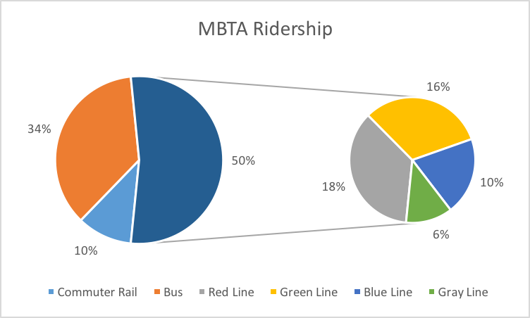
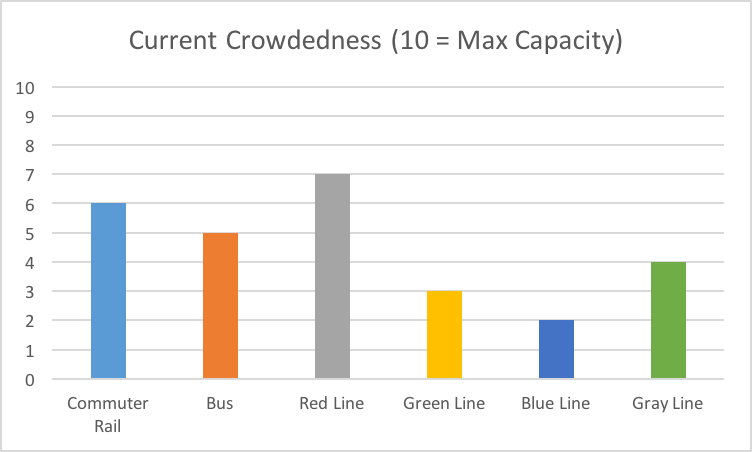

4:36pm All red line trains are down due to tornado. More updates to come.
8:23am Green line to Boston College experiencing 20 min delay
7:58am Green line to Boston College experiencing 10 min delay
4/19/2016
6:50pm Blue line to Aquarium closed for maintenance until 4/21/2016
5:41pm Discount for those with a Charlie Card! Swipe your Charlie card now to recieve one free ticket.
3:00pm Red line to Alewife experiencing technical issues.
1:08pm All fares will be changing to $2.50/ticket 4/30/2016.
4/18/2016
10:23am Red line from Kendall to Central experiencing power outage
Statistics


Reviews
I have been to Spain, to Tahiti and Thailand and Madagascar, but by far the most exotic trip I have ever been on was my ride on the Green line of the MBTA yesterday. It was almost zen in its quality.
All these positive reviews are bogus. The train is slow and expensive!
Why is the fare $2.65 now?? I feel like they change it all the time and never to nice numbers!
Wow. What a trip. I feel like I died and went to heaven. The crowdedness, screeching sounds of the system and confusing kiosks put me in a peaceful state of mind.
I am so tired of riding this system. Why can't it be more like BART?
I am from out of town and had to get a local to help me work the kiosk...